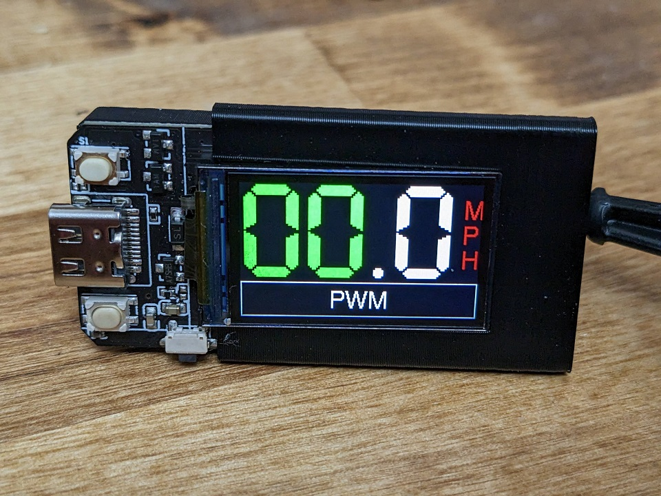

Monocle Web Installer
Install Monocle to a LILYGO ESP32 T-Display board in your browser.
No need to mess around with commandline tools.
- Plug in your LILYGO ESP32 T-Display into a USB port. This tool will install Monocle to it. Where do I buy one?
- Hit "Install" and select the correct COM port. No device found?
- Monocle will take about a minute to install.